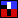
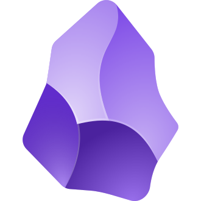
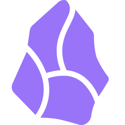

Bare URLs show up as page titles
Hover a link for a preview card
⌥ Option-click to edit. The note keeps the plain URL.
Weekend reading
Paul Graham on doing great work:
https://paulgraham.com/greatwork.html

How to Do Great Work
•https://en.wikipedia.org/wiki/Obsidian_(software) Obsidian (software)
Wikipedia
Obsidian (software)
Wikipedia
Obsidian (software)

Wikipedia
Obsidian (software)
Obsidian is a proprietary personal knowledge base and note-taking application that operates on Markdown
files. The software is free for personal and commercial use; only the offered cloud services, optional
commercial licenses, and early access versions are paid.
•https://docs.obsidian.md/Home

Home - Developer Documentation
•https://github.com/pengx17/logseq-plugin-link-preview GitHub - pengx17/logseq-plugin-link-preview
GitHub - pengx17/logseq-plugin-link-preview
GitHub - pengx17/logseq-plugin-link-preview
The plugin itself:
https://github.com/iam1maker/obsidian-link-peekGitHub - iam1maker/obsidian-link-peek
GitHub - iam1maker/obsidian-link-peek
⌥ Option